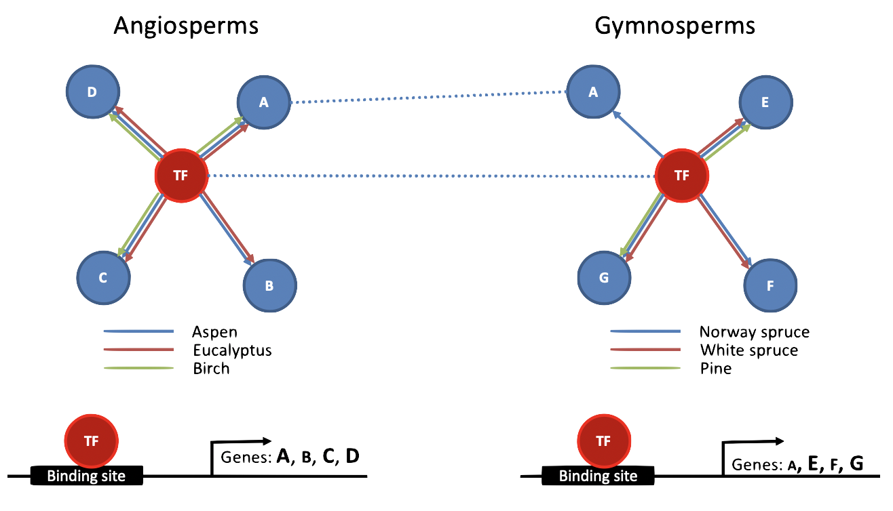
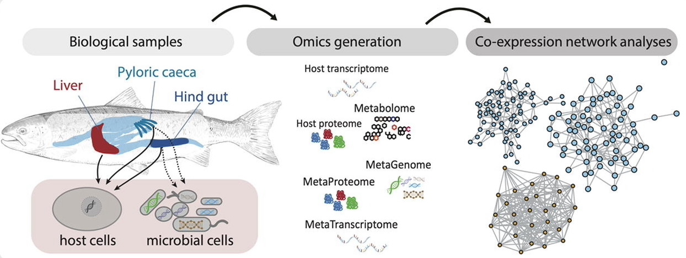
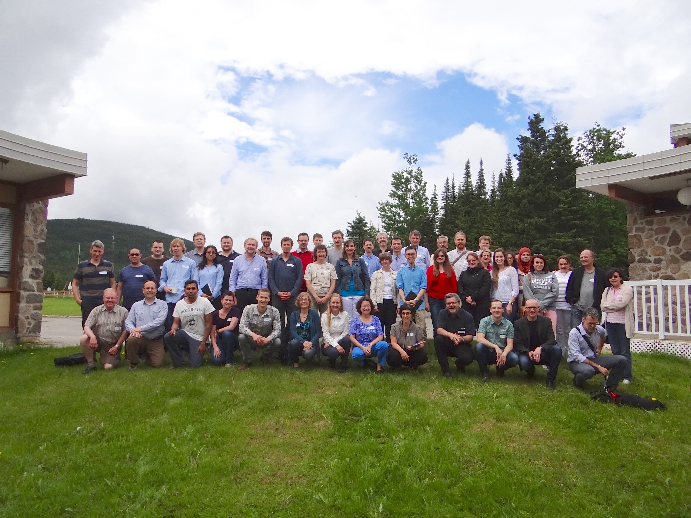
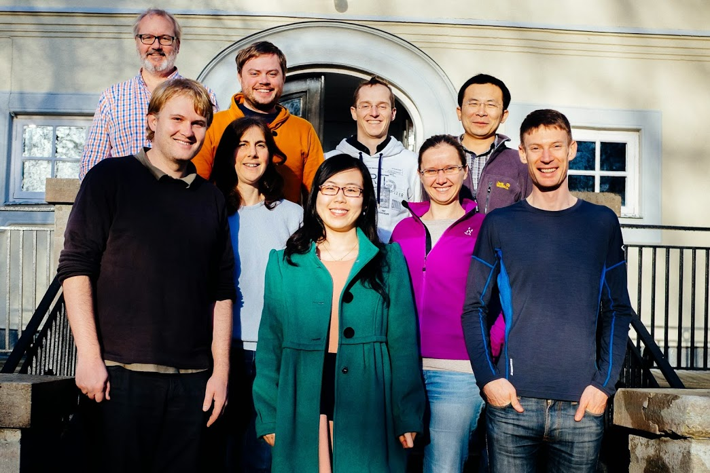

Evolution of gene regulatory networks in trees
We aim to understand the process of wood formation in angiosperm and gymnosperm tree species by modelling the regulatory networks orchestrating the differentiation of stem cells into woody tissues. To this end, we are integrating multi-omics data to infer regulatory networks for each species and comparing these networks across species to identify regulatory mechanisms explaining the evolution of trees.
PI: Hvidsten. Funding to Hvidsten: Research Council of Norway (FRIPRO: EVOTree and Con-TEki) and Swedish Research Council (VR).
Collaboration with Nathaniel Street (Umeå University), Klaas Vandepoele (VIB/Ghent University), Totte Niittylä (Swedish University of Agricultural Sciences (SLU)) and Hannele Tuominen (Umeå University).

Host-microbial interactions and holo-genomics
We are developing network-based methods for unraveling the genetic interactions between hosts and their microbial communities (holo-genomics) ... in fish, cow and more.
PIs: Pope, Sandve, Hvidsten. Funding to Hvidsten: EU (coordinator of HoloGen, WPs in 3D-omics and HoloRuminant), Research Council of Norway (WP in ImprovAFish) and NMBU (postdoc, PhD student).
Collaboration with Phil Pope, Simen R. Sandve, Sabina Leanti La Rosa (NMBU) and Antton Alberdi (University of Copenhagen).

Regulatory evolution after whole genome duplication in salmonids
We aim to understand how gene regulation evolves after whole genome duplication and to reveal whether whole genome duplicaitons spark new regulatory innovations. We are also developing phylogenetic methods for comparative transcriptomics in multiple species.
To understand the regulatory mechansims underlying change in gene regulation after whole genome duplication, we are also integrating multi-omics data to regulatory annotate Atlantic salmon.
PIs: Sandve. Hvidsten. Funding to Hvidsten: Research Council of Norway (WP in DigiSal) and NMBU (PhD student).
Collaboration with Simen R. Sandve and Jon Olav Vik (NMBU) and Rori Rohlfs (San Francisco State University).

Comparative transcriptomics in temperate grass
We are developing methods for comparative transcriptomics to sheed light on the evolution of traits characteristic to the temperate grass subfamily Pooideae - such as cold tolerance.
PIs: Fjellheim, Hvidsten. Funding to Hvidsten: NMBU (Tverrforsk and PhD student).
Collaboration with Siri Fjellheim and Simen R. Sandve.

Other collaborations
With Jorunn Olsen and Carl Gunnar Fossdal we are investigating epitypes and effects of radiation in conifers.
With Odd-Arne Olsen we are investigating the developmental transitions modulated by membrane-anchored calpain DEFECTIVE KERNEL 1 in Physcomitrella patens.
With Rishikesh Bhalerao and Ove Nilsson (Umeå Plant Science Centre) we are investigating the regulatory control of seasonal growth in trees.
With Bartosz Wilczyński (University of Warsaw) we are developing methods for regulatory network inference using multi-omics data.
With Andriy Kryshtafovych and Krzysztof Fidelis (UC Davis) we are developing methods for protein structure analysis.


